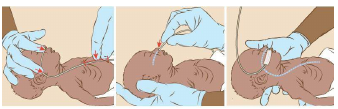

Feeding the LBW infant
For breastfeeding of the normal, healthy infant see Breastfeeding)
Breast milk is the preferred milk because it has a high electrolyte and protein content necessary for
rapid growth of the baby. The antibodies and other anti-infective factors in mother’s milk are very
necessary for the survival of a preterm baby.
How often? Scheduling of enteral feeds
| Weight |
Ideal feeding regime |
| <1500g or < 32 weeks |
Feed every two hours |
| >1500 or > 32 weeks |
Feed every three hours |
Key facts for providers and mothers/ guardians - feeding LBW/ premature infants
Feeding should be scheduled because preterm infants rarely demand feeds. Work out a schedule
with the mother for her to follow. LBW babies may take longer on the breast.
|
Which Route?
Birth weight, gestation, presence or absence of sickness and individual feeding efforts of the baby
determine the decision as to how a LBW neonate should receive fluids and nutrition. The
gestational age is one of the most important determinants as co- ordinated sucking and swallowing
does not develop until about 34 week’s gestation.
Likely route according to age
| Birth
weight |
<1500 grams |
1500 - 1800
grams |
>1800 - 2500 grams |
| Gestational
age |
< 32 weeks |
32-34 weeks |
> 34-35 weeks |
| 1-3 days |
Tube feeds |
Tube feeds or cup |
Breast feed, if unsatisfactory use cup |
| 3 days - 3 weeks |
Tube or cup |
Breast feed, if unsatisfactory use cup |
Breast feed |
Those unable to feed directly on the breast, but who are clinically stable, can be given expressed
breast milk (EBM) by oro-gastric tube or cup feeding. The mother should express her own milk into a
sterile container.
In order to promote lactation, and enable the baby to learn to suck, all babies more than 1500
grams and 32 weeks of gestation should be put on the breast for 5-10 minutes before or after cup-
or tube feeding.
Is the baby able to breastfeed effectively?
- When offered the breast, the baby roots, attaches well and sucks effectively
- S/he is able to suck long enough to satisfy needs.
Is the baby able to accept feeds by alternative methods?
- When offered cup feeds, the baby opens the mouth, takes milk and swallows
without coughing/spluttering
- S/he is able to take adequate quantity to satisfy needs
Judging adequacy of nutrition
The key measure of optimal feeding is the weight pattern of the baby.
| A preterm LBW |
Loses up to 15 percent cumulative weight loss during the first week
of life
Birth weight is usually regained by the end of 2 weeks of life. (May be longer in very premature babies).
Observe for:
Inadequate feeding:
- insufficient breast milk
- Inadequate amounts prescribed if tube or cup fed (has the amount been increased appropriately)?
- mother sick so unable to come to every feed, orphan
Structural abnormality e.g. cleft palate/lip
Persistent hypothermia due to low environmental temperature, which diverts energy from growth to heat production (may be a sign of underlying sepsis)
|
| Small for Dates babies |
Should not have any appreciable weight loss at all and they should start gaining weight early. |
If nutrition supply of the baby is found to be inadequate due to reduced milk supply of the mother, there are several ways to increase the milk production:
- Increase the rate of breastfeeding/expression of both breasts to at least three hourly and ensure both breasts are emptied completely on each occasion
- Increase the intake of nutritious food and increase the amount of liquids of the mother
- Ask the mother to rest sufficiently
- Treat any underlying illness in the mother
Maintenance feeds by gastric tube or by cup
See Wall Charts
Breast Milk Expression
Key facts for providers and mothers – Breast Milk Expression
It is useful for all mothers to know how to express their milk. Expression of
breast milk is required in the following situations:
- To maintain milk production and for feeding the baby who is premature, low birth
weight or sick and cannot breast feed for some time.
- To relieve breast problem e.g. engorgement.
Technique of expression – teach her to:
- Wash her hands with soap and water thoroughly before expression. Sit or
stand comfortably, and hold the clean container near her breast.
- Put the thumb on her breast above the nipple and areola, and her first finger on the
breast below the nipple and areola, opposite the thumb. She supports the breast
with her other fingers.
- Press her thumb and first finger slightly inwards towards the chest wall.
- Press her breast behind the nipple and areola between her fingers and thumb.
She must press on the lactiferous sinuses beneath the areola. Sometimes in a
lactating breast it is possible to feel the sinuses. They feel like peanuts.
- If she can feel them, she can press on them, Press and release, press and
release.
- This should not hurt – if it hurts the technique is wrong. At first no milk may come,
but after pressing a few times, milk starts to drip out.
- Press the areola in the same way from the sides, to make sure that milk is
expressed from all segments of the breast.
- Avoid rubbing or sliding her fingers along the skin. The movements of the fingers
should be more like rolling.
- Avoid squeezing the nipple itself. Pressing or pulling the nipple cannot express milk.
- Express one breast for at least 3-5 minutes until the flow slows; then express the
other side; and then repeat both sides. She can use either hand for either breast.
- Explain that to express breast milk adequately may take 20-30 minutes. Having the
baby close or handling the baby before milk expression may help the mother to have
a good let-down reflex. It is important not to try to express in a shorter time. To
stimulate and maintain milk production one should express milk frequently – at
least 8 times in 24 hours.
|
Tube feeding
Nasogastric tube feeding (NG tube)
The catheter is measured from the tip of the nose to the ear lobe and then to the midpoint between
the xiphoid and umbilicus. Mark the position with a piece of tape. This length of the tube should be
inserted through the nose. For tube feeding; use size French size 5 or 6 nasogastric tube.
Oro-gastric tube feeding (OG tube)
For the oro-gastric catheter, the distance between angle of mouth to earlobe, and then to the
midpoint between the xiphoid and umbilicus. Mark the position with a piece of tape. The length of
tube is used for insertion.
During nasogastric or orogastric insertion, the head is slightly raised and a wet (not lubricated)
catheter is gently passed through the nose (nasogastric) or mouth (orogastric) down through the
oesophagus to the stomach. Its position is verified by aspirating the gastric contents, and by injecting
air and auscultating over the epigastric region.

At the time of feeding, the outer end of the tube is attached to a 10/20ml syringe (without plunger)
and milk is allowed to trickle by gravity. There is no need to burp a tube-fed baby.
The nasogastric or orogastric tube may be inserted before every feed or left in situ for up to 3 days.
While pulling out a feeding tube, it must be kept pinched and pulled out gently. Tube feeding may be risky
in very small babies.
They have small stomach capacity and the gut may not be ready to tolerate feeds. Stasis may also result
from paralytic ileus due to several conditions. Thus, tube-fed babies are candidates for regurgitation and
aspiration. It is important therefore to take precautions.
Before the next feed, aspirate the stomach, if the aspirate is more than 25 percent of the last feed, the baby
should be evaluated for any illness. The feeds may have to be decreased in volume or stopped.
Steps of oro-/nasogastric tube feeding
- Before starting a feed, check the position of the tube.
- For each feed take a clean syringe and remove the plunger
- Connect the barrel of the syringe to the end of the gastric tube
- Pinch the tube and fill the barrel of the syringe with the required volume of milk
- Hold the tube with one hand, release the pinch and elevate the syringe to 5-10 cm
above the level of the baby
- Let the milk run from the syringe through the gastric tube by gravity
- Do not force milk through the gastric tube by using the plunger of the syringe
- It should take about 10-15 minutes for the milk to flow into the baby’s stomach:
control the flow by altering the height of syringe; lowering the syringe slows the milk
flow, raising the syringe makes the milk flow faster.
- Observe the baby during the entire gastric tube feed. Do not leave the baby
unattended.
- Keep the gastric tube capped between feeds.
- Avoid flushing the tube with water or saline after giving feeds.
- Progress to feeding by cup/spoon when the baby can swallow without coughing or
spitting milk. This could be possible in as little as one or two days, or it may take
longer than one week.
- Replace the gastric tube with another clean gastric tube after 3 days, or earlier in
case it is pulled out or becomes blocked.
Steps of cup feeding
Baby should be awake and held sitting semi-upright on caregiver’s lap. Put a small cloth on
the front of chest to catch drip of milk
- Put a measured amount of milk in the cup
- Hold the cup so that the pointed tip rests on the baby's lower lip
- Tip the cup to pour a small amount of milk at a time into the baby’s mouth
- Feed the baby slowly
- Make sure that the baby has swallowed the milk already taken before giving
anymore
- When the baby has had enough, he or she will close her mouth and will not take
anymore. Do not force the baby to feed